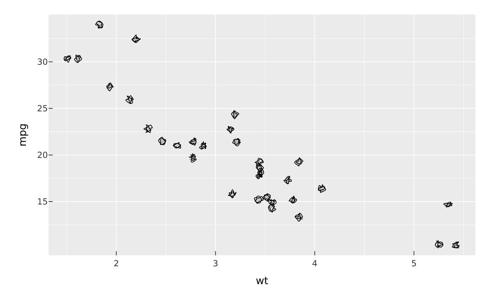

A re-export of vellum::sketch() — the one vocabulary vellumplot speaks for the
hand-drawn look (wobbly outlines, hachure fills, à la
Rough.js). Pass a sketch() value to any mark's
sketch = argument, to an element_line() / element_rect() sketch =
slot, or set it plot-wide with theme_sketch():
Arguments
- ...
Sketch parameters passed straight to
vellum::sketch()—roughness,bowing,fill_style,fill_weight,hachure_angle,hachure_gap,curve_tightness,disable_multi_stroke,preserve_vertices,seed. See there for defaults.
Details
vplot(mpg) |> mark_point(x = displ, y = hwy, sketch = sketch(roughness = 1.2))Sketch is a geometry property, not a layer effect: it perturbs the
mark itself (its wobble is generated natively in the vellum engine, so it is
exact, cross-backend, and works in PDF), rather than compositing extra copies.
Text is never sketched — pair a handwriting family with it for a fully
hand-drawn plot.
Resolution is most-specific-wins: a mark's sketch = beats an element slot,
which beats the plot-wide theme_sketch() default. At any level sketch = NA
(or FALSE) forces that element crisp, overriding a broader default;
sketch = NULL inherits.
Examples
vplot(mtcars) |>
mark_point(x = wt, y = mpg, sketch = sketch(roughness = 1.5, seed = 7))
